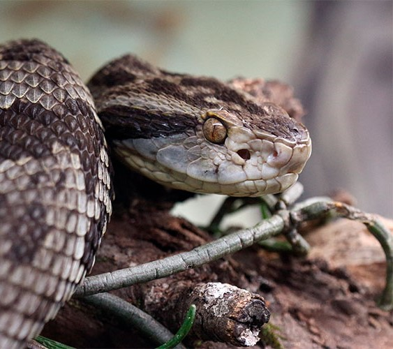

Humano
- Formigamento
- Sonolência
- Visão Turva
- Dor muscular
- Náuseas
- Dor de cabeça.
Cão
- Inchaço no pescoço
- Inchaço na região da picada
- Pele arroxeada
- Queda dos pelos
- Queda da pele
Gato
- Vermelhidão no local da picada
- Sangramento
- Inchaço
- Marcas de dentes no local
- Dificuldade para respirar
- Queda de pelos
- Vômitos
- Perda de apetite